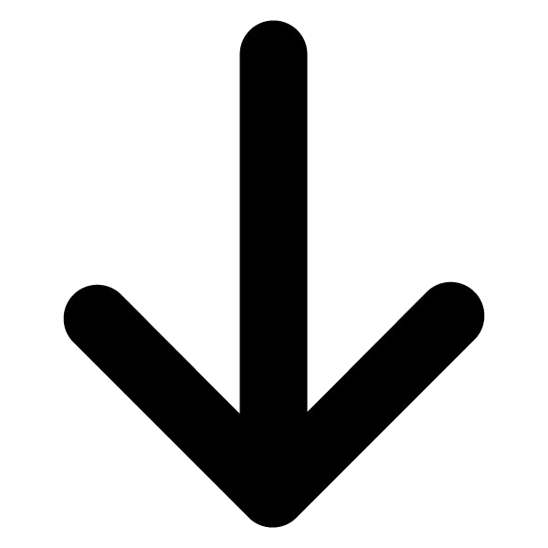

<map on-create="mapCreated(map)"
	 marked-Locations="markedLocations"
	 marked-location-click="fmiClicked()"></map>

<button class="button button-royal nearest-event" ng-click="goToNearestEvent()">Find nearest event</button>
